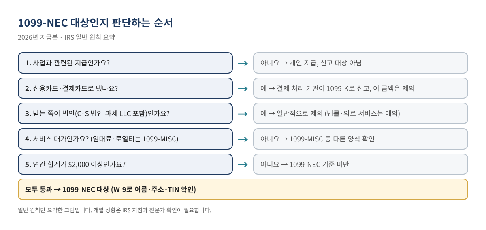
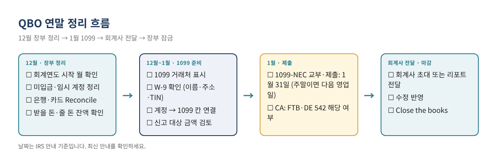
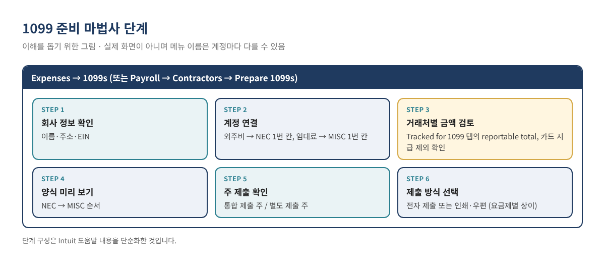
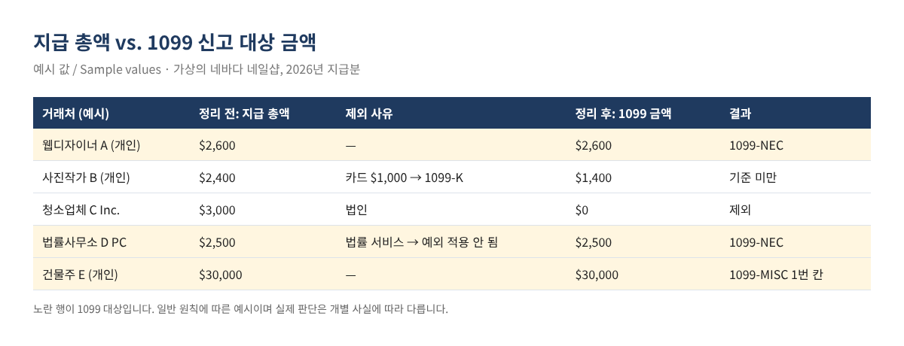

1099를 1월 말에 한꺼번에 준비하고 있다면: QBO 연말 정리와 1099 준비, 회계사에게 넘길 리포트 (네바다·캘리포니아·텍사스 비교)
12월이 되면 장부 정리, 1099 준비, 회계사에게 보낼 자료가 한꺼번에 몰립니다. 특히 1099는 1월 말이 기한이라 연초에 거래처 주소와 납세자 번호(TIN)를 찾느라 시간을 쓰는 경우가 많습니다. 그런데 1099 금액은 결국 QuickBooks Online(QBO)에 기록된 지급 내역에서 나오기 때문에, 연말 장부 정리가 먼저 끝나야 1099도 정확해집니다.
이 글은 QBO에서 연말을 정리하는 순서, 1099 대상 거래처를 고르고 금액을 확인하는 방법, 그리고 네바다·캘리포니아·텍사스의 주(州) 단위 신고 차이를 각 기관의 공식 안내를 기준으로 정리합니다. 시리즈 첫 글 QuickBooks Online 기초 가이드에서 짧게 소개한 연말 정리 부분을 자세히 풀어 쓴 글입니다.
이 글은 교육용 일반 정보이며 세무·법률·재무 자문이 아닙니다.
이런 분께 필요합니다 ☐ 개인 외주업자(디자이너, 청소, 수리 기사 등)에게 대금을 지급한 분 ☐ 1099를 매년 1월 말에 급하게 준비해 온 분 ☐ 회계사가 "연말 리포트를 보내 달라"고 하는데 무엇을 보내야 할지 모르는 분 ☐ 네바다·캘리포니아·텍사스 중 한 곳 이상에서 사업하는 분
1. 올해 꼭 알아야 할 변화: 1099-NEC 기준 금액 $2,000
IRS 안내에 따르면 2026년에 지급한 금액부터 Form 1099-NEC(비직원 보수)의 신고 기준 금액이 $600에서 $2,000으로 올라갔습니다. 1099-NEC/MISC 작성 지침은 이 금액이 2027년부터 물가에 따라 조정될 수 있다고 안내합니다. 즉 2027년 초에 제출하는 2026년분 1099는 새 기준으로 판단하게 됩니다.
QBO의 1099 도움말도 연간 $2,000 기준을 넘은 거래처만 1099 대상으로 표시한다고 설명합니다. 다만 모든 항목이 $2,000으로 바뀐 것은 아닙니다. 아래 표처럼 로열티는 $10, 변호사에게 지급한 총액(gross proceeds)은 $600이 그대로 적용됩니다.
| 지급 종류 (2026년 지급분) | 양식·칸 | 신고 기준 |
|---|---|---|
| 개인 외주업자에게 준 서비스 대금 | 1099-NEC 1번 칸 | $2,000 이상 |
| 변호사 수임료(서비스 대가) | 1099-NEC | $2,000 이상 |
| 임대료(개인 건물주 등) | 1099-MISC 1번 칸 | $2,000 이상 |
| 로열티 | 1099-MISC 2번 칸 | $10 이상 |
| 변호사에게 지급한 총액(gross proceeds) | 1099-MISC 10번 칸 | $600 이상 |
IRS 지침에서 공통으로 확인되는 제외 원칙도 함께 알아 두면 좋습니다.
- 사업과 관련된 지급만 대상입니다. 개인적인 지급은 신고 대상이 아닙니다.
- 법인(C·S 법인으로 과세되는 LLC 포함)에 대한 지급은 일반적으로 제외됩니다. 단, 법률 서비스와 의료 서비스 대금은 법인이라도 제외되지 않습니다.
- 신용카드·결제카드로 낸 금액은 1099-NEC/MISC 대상이 아니며, 카드 결제 처리 회사가 1099-K로 신고합니다. QBO도 신용카드 지급은 1099 금액에 포함하지 않습니다.

2. 연말 정리 순서: 12월에 할 일과 1월에 할 일
Intuit의 QBO 연말 가이드는 회계연도 시작 월 확인, 미입금 내역 정리, 고객·거래처 잔액 확인, 계좌 Reconcile, 장부 잠금(Close the books) 순서를 안내합니다. 여기에 1099 준비를 더하면 아래 흐름이 됩니다.

1단계. 회계연도 시작 월 확인
Settings ⚙ → Account and settings → Advanced → Accounting 항목의 "First month of fiscal year"가 실제 회계연도와 맞는지 봅니다. 여기가 틀리면 "올해" 리포트의 기간이 어긋납니다.
2단계. 미입금(Undeposited Funds)·임시 계정 정리
받은 돈이 은행 입금과 연결되지 않고 남아 있으면 매출이 두 번 잡히거나 은행 잔액이 맞지 않습니다. 정리 방법은 미입금(Undeposited Funds) 정리 글을 참고하세요. 미분류나 "확인 필요"처럼 임시로 쓰는 계정에 잔액이 남아 있다면 올바른 계정으로 옮깁니다. 여러 건을 한 번에 옮기는 방법은 일괄 재분류 글에 정리했습니다.
3단계. 모든 은행·카드 계좌 Reconcile
Intuit는 세금 시즌을 준비하려면 연말까지 모든 계좌를 Reconcile하라고 권합니다. 가장 오래된 명세서부터, 또는 마지막으로 맞춘 지점부터 시작합니다. 메뉴는 All apps → Accounting → Reconcile(화면에 따라 Settings ⚙ → Reconcile)입니다. 차이가 남으면 중복 거래·Reconcile 차이 찾기 글을 참고하세요.
4단계. 고객·거래처 잔액 확인
Reports → Standard reports에서 A/R Aging Summary(받을 돈), Accounts payable aging summary(줄 돈)를 열어 이미 받았거나 이미 낸 금액이 남아 있지 않은지 확인합니다. 인보이스·Bill 처리는 인보이스·입금 처리 글과 Bill과 외상 매입 글을 참고하세요.
5단계. 1099 대상 거래처 표시와 W-9 확인
All apps → Expenses & Bills → Contractors에서 외주업자를 추가하고, 이미 등록된 거래처는 거래처 정보에 "Track payments for 1099"가 체크되어 있는지 확인합니다(메뉴 위치는 계정마다 다를 수 있습니다). Intuit 도움말은 외주업자에게 W-9를 받아 두라고 권합니다. 1099 전자 제출은 미국 주소만 지원하고, 개인은 SSN, 사업체는 EIN이 맞아야 오류가 나지 않습니다.
6단계. 1099 준비(Prepare 1099s) 마법사 실행
메뉴 이름은 계정에 따라 다릅니다. Expenses → 1099s, 또는 Payroll → Contractors → Prepare 1099s에서 시작합니다. 마법사는 대체로 다음 순서로 진행됩니다.
- 회사 정보 확인
- 지급에 쓴 비용 계정을 1099 칸에 연결(Map accounts) — 외주비 계정은 NEC 1번 칸, 임대료 계정은 MISC 1번 칸 등
- "Tracked for 1099" 탭에서 거래처별 신고 대상 금액(reportable total) 확인, 빠진 거래처는 "Not tracked for 1099" 탭에서 추가
- NEC·MISC 양식 미리 보기
- 주 제출 단계 확인 — Intuit는 연방·주 통합 제출을 받는 주는 추가 절차가 없고, 일부 주는 별도로 주에 제출해야 한다고 안내합니다
- 전자 제출 또는 인쇄·우편 선택(요금제에 따라 표시가 다름)

7단계. 회계사에게 리포트 전달, 장부 잠금
마지막으로 회계사에게 자료를 넘기고(6장 참고), 수정이 끝나면 장부를 잠급니다(7장 참고).
3. 연방 기한과 전자 제출: 2027년 초 일정
| 항목 | 기한·기준 (IRS 안내) |
|---|---|
| 1099-NEC 수령인 교부·IRS 제출 | 1월 31일 (종이·전자 동일) |
| 1099-MISC 수령인 교부 | 1월 31일 (8번·10번 칸이 있으면 2월 15일) |
| 1099-MISC IRS 제출 | 종이 2월 28일, 전자 3월 31일 |
| 기한이 주말·공휴일인 경우 | 다음 영업일 |
| 전자 제출 의무 | 정보신고서를 모두 합쳐 10건 이상이면 전자 제출 |
| IRS 무료 제출 시스템 | IRIS Taxpayer Portal (사용하려면 IRIS TCC 필요, 처리에 최대 45일 소요될 수 있음) |
팁 2027년에는 1월 31일과 2월 28일이 일요일이고 2월 15일이 연방 공휴일(Presidents' Day)이라 위의 다음 영업일 규칙이 적용될 수 있습니다. 정확한 날짜는 IRS의 최신 안내로 확인하세요. 또 IRS Publication 1099는 2027년 제출 시즌부터 IRIS가 유일한 접수 시스템이 되고 기존 FIRE 시스템은 쓸 수 없다고 안내합니다. QBO가 아닌 IRIS로 직접 제출하려면 TCC 신청을 미리 해 두는 것이 안전합니다.
4. 네바다·캘리포니아·텍사스 비교
주 정부 쪽 의무는 주마다 크게 다릅니다. 아래 표는 각 기관 공식 페이지에서 확인한 내용만 적었고, 공식 페이지에서 확인하지 못한 칸은 그렇게 표시했습니다.
| 항목 | 네바다 (NV) | 캘리포니아 (CA) | 텍사스 (TX) |
|---|---|---|---|
| 개인 소득세 (확인한 공식 페이지 기준) | 없음 (NV Department of Taxation) | 이번에 확인한 FTB 페이지에서는 다루지 않음 (정보신고서 제출 안내는 아래 참고) | 없음 (Texas.gov) |
| 주에 1099 제출 | 공식 페이지에서 확인하지 못함 — 해당 여부를 주 기관에 확인 | 수령인이 CA 거주자이거나 거래 원천이 CA이면 FTB 제출 대상일 수 있음. IRS 연방·주 통합 제출(CF/SF)을 쓰고 금액이 같으면 따로 내지 않음 | 공식 페이지에서 확인하지 못함 — 해당 여부를 주 기관에 확인 |
| 주 제출 방법·기한 | — | 9건 이하는 종이 가능, 10건 이상은 SWIFT 전자 제출. 1099-NEC 주 제출은 종이 2/28, 전자 3/31 (FTB 안내 표) | — |
| 독립계약자 별도 신고 | 공식 페이지에서 확인하지 못함 | EDD DE 542: 개인·개인사업자(연방 세법상 개인사업자로 취급되는 1인 LLC 포함) 외주업자에게 $600 이상 지급 또는 계약 시 20일 이내 신고 (미신고 시 건당 $24, 고의·허위 시 $490) | 공식 페이지에서 확인하지 못함 |
| 연말에 함께 볼 것 | 총수입 $4 million 초과 사업자는 Commerce Tax 대상. 홈페이지 공지: 2026년 12월 7일부터 세금 서류·납부 전자 제출 요구 (적용 범위는 공지에서 확인) | DE 542는 연방 1099 기준과 별도로 $600 기준이 안내되어 있음 — 2026년 지급분 적용 방법은 EDD에 확인 | 텍사스에서 설립했거나 사업하는 과세 대상 법인·LLC는 Franchise tax 신고·납부 |
캘리포니아 DE 542 주의 EDD 페이지는 연방 1099-NEC/MISC 제출 의무가 있는 서비스에 대해 $600 이상을 지급하거나 계약하면 DE 542를 내라고 안내합니다. 연방 기준이 $2,000으로 바뀐 뒤 $600~$2,000 구간을 어떻게 처리하는지는 EDD 안내가 바뀔 수 있으므로, 해당되는 경우 EDD 최신 안내나 전문가에게 확인하세요. DE 542는 1월에 몰아서 하는 신고가 아니라 지급·계약 후 20일 이내 신고라는 점도 다릅니다.
세 주 모두에 해당하는 공통점도 있습니다. 판매세가 있는 업종이라면 연말 마감 전에 판매세 신고 금액과 QBO 장부를 맞춰 두는 것이 좋습니다. 자세한 내용은 판매세 QBO 설정과 신고 준비 글을, 직원 W-2 쪽은 직원 급여 기록 글을 참고하세요.
5. 예시: 라스베이거스 네일샵의 1099 정리
가상의 사업체 "샘플 네일샵(Sample Nail Studio LLC, 네바다)"의 2026년 지급 내역입니다. 아래 표의 이름과 금액은 모두 예시 값 / Sample values입니다.
| 거래처 (예시) | 형태 | 지급 방법·금액 (예시 값) | 1099 판단 (일반 원칙 기준) |
|---|---|---|---|
| 웹디자이너 A | 개인 | 수표·계좌이체 $2,600 | 1099-NEC 대상 ($2,000 이상) |
| 사진작가 B | 개인 | 계좌이체 $1,400 + 신용카드 $1,000 | 카드분 제외 → $1,400, 기준 미만 |
| 청소업체 C Inc. | 법인 | 수표 $3,000 | 법인이므로 일반적으로 제외 |
| 법률사무소 D PC | 전문 법인 | 수표 $2,500 (법률 서비스) | 법률 서비스는 법인이라도 1099-NEC 대상 |
| 건물주 E | 개인 | 매월 임대료, 연 $30,000 | 1099-MISC 1번 칸 대상 |
사진작가 B는 지급 총액이 $2,400이지만 신용카드분 $1,000은 1099-K로 따로 신고되므로 1099 금액은 $1,400입니다. 그래서 기준 미만이 됩니다. 반대로 법률사무소 D는 법인이지만 법률 서비스 예외 때문에 대상이 됩니다. 이처럼 "지급 총액"과 "1099 신고 금액"은 다를 수 있습니다.

6. 회계사에게 넘길 리포트
회계사를 초대하면 리포트를 일일이 보내지 않아도 됩니다. Settings ⚙ → Manage users → Accountants(또는 Accounting Firms) 탭 → Invite에서 초대하며, 주 관리자나 회사 관리자만 초대할 수 있습니다. Intuit는 회계사 사용자가 요금제 사용자 수에 포함되지 않는다고 안내합니다. 권한 설정은 사용자·권한 설정 글을 참고하세요. 파일로 보내야 한다면 아래 리포트를 연말 기준으로 준비합니다.
| 리포트 (Reports → Standard reports에서 이름 검색) | 확인할 내용 |
|---|---|
| Profit and Loss | 1년 매출·비용 합계, 이상하게 큰 계정 |
| Balance Sheet | 12월 31일 기준 은행·카드·대출 잔액이 명세서와 맞는지 |
| General Ledger / Transaction Detail by Account | 계정별 상세 거래 |
| A/R Aging Summary · Accounts payable aging summary | 연말에 남은 받을 돈·줄 돈 |
| 1099 Transaction Detail Report | 거래처별 1099 대상 지급 내역 |
| Reconciliation 리포트 (History by account) | 계좌별 연말 Reconcile 완료 여부 |
7. 장부 잠그기(Close the books)
회계사 수정까지 끝나면 Settings ⚙ → Account and settings → Advanced → Accounting → Edit에서 "Close the books"를 켜고 마감일(Closing date)을 입력합니다. 경고만 띄우고 수정을 허용하는 옵션과, 경고 후 비밀번호를 입력해야 수정할 수 있는 옵션이 있습니다. 관리자만 설정할 수 있고, 마감일 이후의 변경 내역은 "Exceptions to Closing Date" 리포트로 확인할 수 있습니다. 마감한 기간을 고쳐야 할 때는 이미 신고한 숫자와 달라지지 않는지 회계사와 먼저 상의하세요. 수정 방법은 잘못 입력한 거래 고치기 글에 있습니다.
8. 자주 하는 실수
- 모든 지급을 1099에 넣기: 법인·카드 결제·개인 지급까지 넣으면 불필요한 1099가 나갑니다.
- $600 기준 그대로 쓰기: 2026년 지급분 1099-NEC는 $2,000 기준입니다. 단 캘리포니아 DE 542처럼 별도 기준이 안내된 신고는 따로 확인합니다.
- 외주비를 여러 계정에 흩어 기록: 마법사에서 연결하지 않은 계정의 지급은 1099 금액에서 빠집니다.
- W-9를 1월에 요청: 주소·TIN을 받는 데 시간이 걸립니다. 처음 지급할 때 받는 것이 안전합니다.
- Reconcile 없이 1099 제출: 중복·누락 거래가 그대로 1099 금액에 반영됩니다.
9. 자주 묻는 질문 (FAQ)
Q1. 외주업자에게 $1,500만 줬는데 1099를 보내도 되나요?
IRS 지침상 2026년 지급분 1099-NEC의 신고 기준은 $2,000입니다. 기준 미만 지급을 어떻게 처리할지는 사업체 상황에 따라 다를 수 있으니 회계사와 확인하세요. 캘리포니아라면 DE 542 기준은 따로 확인해야 합니다.
Q2. Zelle이나 계좌이체로 준 돈도 1099 대상인가요?
IRS 지침에서 1099-NEC/MISC에서 빠진다고 명시한 것은 신용카드·결제카드와 일부 제3자 결제 네트워크로 처리된 지급입니다. 특정 앱이나 이체 방식이 여기에 해당하는지는 결제 방식에 따라 다를 수 있으므로 IRS 안내나 전문가에게 확인하세요.
Q3. 거래처가 LLC라고 하는데 1099를 보내야 하나요?
IRS 지침은 C·S 법인으로 과세되는 LLC에 대한 지급을 일반적으로 제외합니다. LLC가 어떻게 과세되는지는 W-9의 세금 분류 칸에서 확인합니다. 법률·의료 서비스 대금은 예외입니다.
Q4. 네바다·텍사스 사업체도 주에 1099를 내야 하나요?
두 주 모두 개인 소득세가 없다고 공식 페이지에 안내되어 있지만, 1099 주 제출 의무에 대한 명시적 안내는 이번에 확인한 공식 페이지에서 찾지 못했습니다. 수령인이 다른 주 거주자라면 그 주의 규정이 적용될 수도 있으니 해당 주 기관이나 전문가에게 확인하세요.
Q5. 장부를 잠근 뒤 실수를 발견하면 어떻게 하나요?
관리자는 경고나 비밀번호를 거쳐 수정할 수 있지만, 이미 신고한 숫자가 바뀔 수 있습니다. 먼저 회계사와 상의하고, 필요하면 당해 연도에 조정 분개를 하는 방식을 검토합니다.
10. 셀프 체크리스트
- ☐ 회계연도 시작 월이 맞는지 확인했다
- ☐ 미입금·임시 계정 잔액을 정리했다
- ☐ 모든 은행·카드 계좌를 12월 명세서까지 Reconcile했다
- ☐ 받을 돈·줄 돈 잔액(Aging)을 확인했다
- ☐ 1099 대상 거래처에 "Track payments for 1099"를 표시하고 W-9를 받았다
- ☐ 외주비·임대료 계정을 1099 칸에 연결했다
- ☐ 1099-NEC를 1월 31일(주말이면 다음 영업일) 전에 제출·교부할 계획을 세웠다
- ☐ (캘리포니아) DE 542 신고 대상 지급이 있었는지 확인했다
- ☐ 회계사를 초대했거나 연말 리포트를 보냈다
- ☐ 수정이 끝난 뒤 장부를 잠갔다
관련 글: 기초 잔액 문제는 Opening Balance Equity 정리 글, 선급비용은 선급비용 상각 글을 참고하세요.
면책 안내
이 글은 교육용 일반 정보이며 세무·법률·재무 자문이 아닙니다. 1099 기준 금액, 기한, 주별 신고 규정은 매년 바뀔 수 있으며 사업체마다 적용이 다릅니다. 본인 사업체에 어떻게 적용되는지는 CPA, EA, 변호사 등 자격을 갖춘 전문가와 확인하세요. QBO 화면, 메뉴 이름, 요금제 기능도 자주 바뀌므로 현재 화면과 Intuit, IRS, 각 주 기관의 공식 안내를 확인하세요.
QuickBooks is a registered trademark of Intuit Inc.; not affiliated with or endorsed by Intuit.
출처
- IRS: Instructions for Forms 1099-MISC and 1099-NEC (Rev. December 2026) — 확인일 2026-11-24
- IRS: Am I required to file a Form 1099 or other information return? — 확인일 2026-11-24
- IRS: Form 1099 NEC & Independent Contractors (FAQ) — 확인일 2026-11-24
- IRS: Publication 1099 (2026), General Instructions for Certain Information Returns — 확인일 2026-11-24
- IRS: E-file information returns with IRIS — 확인일 2026-11-24
- IRS: E-file information returns — 확인일 2026-11-24
- California FTB: Guidance for reporting information returns — 확인일 2026-11-24
- California FTB: Guide to Information Returns Filed with California — 확인일 2026-11-24
- California EDD: Independent Contractor Reporting — 확인일 2026-11-24
- Nevada Department of Taxation: Income Tax in Nevada — 확인일 2026-11-24
- Nevada Department of Taxation: Homepage notices — 확인일 2026-11-24
- Texas.gov: Texas Taxes — 확인일 2026-11-24
- Intuit: How to create and file 1099s in QuickBooks Online — 확인일 2026-11-24
- Intuit: Set up contractors for 1099s — 확인일 2026-11-24
- Intuit: Troubleshoot missing contractors or wrong amounts on 1099s — 확인일 2026-11-24
- Intuit: Create 1099 reports — 확인일 2026-11-24
- Intuit: Year-end guide for QuickBooks Online — 확인일 2026-11-24
- Intuit: Tips for year-end reconciliation — 확인일 2026-11-24
- Intuit: Reconcile an account in QuickBooks Online — 확인일 2026-11-24
- Intuit: Run a Balance Sheet report — 확인일 2026-11-24
- Intuit: Run a ledger report that shows debits and credits — 확인일 2026-11-24
- Intuit: Lock your books in QuickBooks Online — 확인일 2026-11-24
- Intuit: Edit your closed books — 확인일 2026-11-24
- Intuit: Invite accountant users — 확인일 2026-11-24